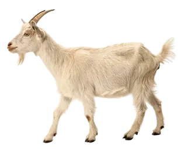

Animal Grimoire
 Goats
Goats
Overview
General wisdom states that goats were the first animals to be successfully domesticated. Goats are associated with love, knowledge, fertility, prophesy, expiation, regeneration, and rebirth. They are intensely associated with sex, sexual energy, and the procreative urge and power.
Goats and Discovery
Goats are involved in a lot of firsts. Goats are credited with leading people to coffee, once a sacred beverage. An Ethiopian shepherd noticed that his goats were particularly perky; he watched as they chewed coffee berries and tried some himself, thus initiating the cult of caffeine. Goats brought various fragrant resins to people, most especially rock roses, among Aphrodite's holy flowers. The aromatic essence was discovered clinging to goats' beards.
Ancient Spiritual Evidence
Some of the most ancient existing evidence of magickal and spiritual ritual involves the unearthed funeral rites of a Neanderthal child discovered in Teshik-Tash, modern Uzbekistan. The child's partial skeleton was encircled by ibex horns, a type of wild goat, arranged vertically in pairs, the pointed ends stuck into the ground, reminiscent of later European funerary spells that involve driving spindles into the ground, usually intended to quiet the restless dead.
The Oracle of Delphi
Goats are responsible for the discovery of the Oracle of Delphi. Before there was ever a shrine, Delphi was a playground for goats, which thrived on the rocky terrain. Humans followed them up the slopes and domesticated them c. 1400 BCE. As legend tells it, a massive earthquake created a chasm or fissure at Delphi through which some sort of vapor emanated. Goats exposed to the vapors were observed to act strangely, suffering spasms and bleating in odd voices. Their keepers began to have similar experiences except that their odd voices were discovered to be prophetic. Delphi eventually became an organized oracular shrine, originally dedicated to Gaia, the Earth and then to Apollo. Goats remained the ritual sacrifice at Delphi.
Sacred Companions and Mounts
Goats serve as Aphrodite's mount and as companions of various Middle Eastern fertility spirits, including Inanna-Ishtar and Lady Asherah. Perceptions change: once upon a time, comparing a man to a goat implied admiration. Today's "old goat" is a pathetic, foolish lecher, kind of like those dumb-ass donkeys.
Ancient Spiritual Traditions
Goats were profoundly involved with a multitude of ancient spiritual traditions including Celtic, Greek, Jewish, Norse, Roman, and Sumerian. Goats are sacred to Aphrodite, Azazel, Dionysus, Freyja, Hera, Hermes, Thor, Zeus: sexy deities, one and all. Goats were respected, sacred, and beloved in ancient religion. Goats were people's teachers, companions and in many places, primary food animal, supplying meat, milk, dairy products, and material for clothing and tents.
Witches and Goats
Goats were not generally considered to be witches' familiars, nor do witches transform into goats. Goats do frequently serve as witches' mounts however, and many medieval woodblock prints depicting witchcraft show witches riding on goats' backs, just like Aphrodite, although this may have been intended to euphemistically suggest that witches copulate with the devil.
Symbolism
More than anything the goat is infamous as an emblem of lust and procreation. Much of that reputation traces to the so-called Goat of Mendes, sometimes called Baphomet, of ancient Egypt, a powerful deity honored through rites that celebrated the procreative force of nature. The Greeks identified this god with Pan, the god of nature, who sometimes wore goatskins.
The Romans likewise saw the goat as a creature of lasciviousness and fertility. Barren women were counseled to couple with goats, or to have their backs lashed with strips cut from the hide of a sacrificed goat, a rite thought to purify them. This may have lent its name to the festival of Lupercalia, possibly from a phrase meaning to purify by means of the goat. The animal's shaggy hair and horns added to its reputation for sexual vigor, and it was said that a single male could service a hundred and fifty females. The goat and human hybrid known as the Satyr was imagined as the product of such carnality, a warning of what becomes of those who surrender to base desire.
In some traditions the goat is a creature of fire, and in particular the fire of lightning. In the Vedic tales of India, Agni, lord of fire, rides upon a goat. China and Tibet held a similar image, casting the goat as a messenger that carries the blessings of the gods in their heavens down to people on earth. The ancient Greeks made the she-goat a sign of lightning, immortalizing the goat that suckled the infant Zeus on sacred Mount Ida as the constellation Amalthea. When that constellation was visible, storms and rain were expected, and language preserves the connection, for the word aegis names both a goatskin and stormy weather.
Then there is the scapegoat, first described in the Old Testament. A rite used two goats, one set free and one sacrificed. The freed goat was burdened with the sins of the people and driven into the desert to perish, its end often hastened by being cast from a cliff. The name of that cliff, Azazel, meaning the goat that departs, was also the name of a demon. The idea survives today, the scapegoat being one who carries the blame for the wrongs of others, and it has at times cast the goat as a figure of the unrepentant sinner.
The Devil as Goat
No animal is more associated with the Christian devil than the goat. Artistic renditions of the sabbat from the Middle Ages to Goya's masterpieces depict Satan presiding over the witches' sabbat in the form of a tall man-sized upright goat. Satan is also depicted as a composite creature, frequently with bat's wings and a snake's forked tongue, but with goat's eyes, horns and hooves.